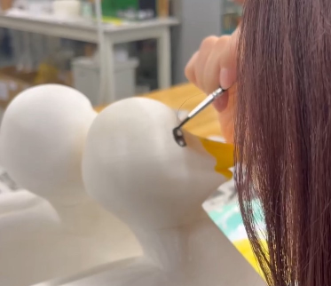

■＝考えないといけないことや疑問等 ●＝具体的にやること →＝やったこと
■本体の素材を決める
●素材の重量や、色を付けられるため3Dプリンタ―を用いる
⇢CURAでインフィル密度を10％に変更し、なるべく軽量化できるように工夫
パーツが大きくて印刷時間がかかるので、密度を変更するのは最適👍
結局5分割にして、プリントすることに」
■色の付け方をアクリル絵の具でするのか？付け置きでするのか？
⇢アクリル絵の具で塗る 本物のアヒルに近づけるために全体は白色、口は黄色にする
6/16アクリル絵具で色塗り
■目はアヒルの性格に寄せた形にしたい...どんな形にするかはコンセプトに合わせる
⇢1匹ずつ「かわいい系」と「かっこいい系」の雰囲気になるようにアクリルで描いた（6/23）

かわいい系アヒルにはチークを塗ったところがポイント✨
■アヒルが自立するように重さを調節
●頭部と後部で密度を変える
→5/26【試作1】収縮サイズでのアヒル完成！自立〇

■アヒルの下部に埋め込む車のサイズを車班と調節
⇢FUSIONでアヒルの下部に車の部品とスピーカーを横並びに入れ込めるようにした

■データ作成
⇢3Dプリンターのデータ作成
6/11【試作2】実寸サイズのアヒル完成（naako,harunaの二体分のデータをプリント）

●（試作2）の問題点...スピーカーは入ったが、車部分は車チーム指定の大きさを満たしてはない
翼を差し込む穴を開けるべき
⇣⇣⇣
⇢問題点をもとにデータを作り直し、プリントしなおした
【本体】2体分完成！！
●本体がやっとプリントできたので、naakoさんと一緒に色塗り、装飾を中心に進め、
翼作成、車班との兼ね合いを行う！
■翼のデータ作成
●アクリルで色を付け
⇢イラストレーターを用い、3mmのアクリル板をレーザーカッターでカット

⇢青系とオレンジ系の二種類の羽を染色！グラデーションで綺麗✨
●アヒルの形と合わせて羽を熱で曲げてさらに立体感を出す！
⇢温風機を使い温めながら、少しずつ曲げる！一気に曲げると折れてしまうから注意
⇢装着しながら微調整
⇢翼の先にチェーンや星をつける
●みんなのイメージどうりのアヒルにはどんな装飾が適切か話し合う
■「かわいくて、かっこよくて、うるさい」をどう表現するか...
⇢（6/16）材料調達！
"世界一"間を出すために頭に王冠をつける、首にリボンをまく、目はかわいい系とかっこいい系にする
≪✨🎊世界一のアヒル本体チーム完成！！！！！！！🦆👑🎀≫

めっちゃいい感じ！！👍
羽も立体的で色がきれい✨
こだわった部分は、"世界一の鳥とは？"分析ででた「かわいい」「かっこいい」「うるさい」をできるだけ
視覚的に伝わるよう最大限に工夫したところ！！
「かわいい」...目がキラキラ、ほっぺがピンク、首のでかリボン、ピンク紫系の羽で透明感UP、翼の先の星でキラキラ感
「かっこいい」...目をキリっと、翼を赤系の色で強い感じに、王冠、チェーンと星でいかつめに
■作成段階のvlogはどこに公開するか？
⇢専用のYoutubeチャンネルを開設することに決定！チャンネル名は「DUKING channel」🦆👑